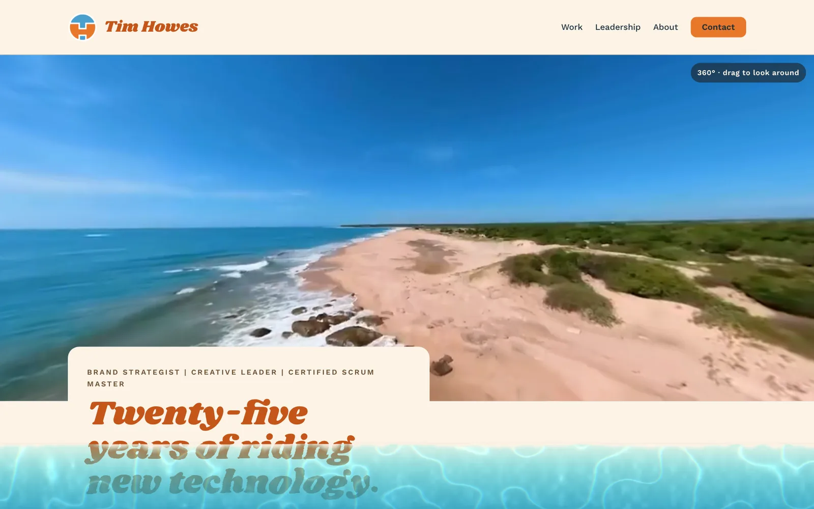

Water Lab
A live ocean along the bottom of every page. It responds to your cursor, your scrolling and the tilt of your phone.
1 dayconcept to live site
1 fileno libraries, hand-built WebGL
8settings you can tune on this page

- Client
- Personal product
- Company
- timhowes.me · 2026
- Role
- Creative Director and Creative Technologist
- Team
- Solo, with Claude
- Discipline
- Interaction design, real-time graphics, rapid prototyping
Challenge
I build immersive experiences for a living, and I wanted my own site to feel like stepping onto a beach rather than reading a brochure. The question was whether a web page could carry some of that presence without a headset, without getting in the way of the work it shows.
Solution
- A small water simulation sits along the bottom of every page, Caribbean blue with foam where it meets the shore.
- Move your cursor or drag a finger through it and it ripples; the faster you move, the bigger the splash. Scrolling sloshes it, then it settles.
- On a phone, gravity comes from the tilt of the device. The screen edges hold the water in, and the amount never changes: lay the phone flat and it spreads into a thin, clear sheet.
- The page underneath stays readable and clickable, and the water stays still for visitors who turn on reduced motion.
Try it
- The Water lab panel is open on this page. Change the water level, foam, surf and wave speed, and your settings follow you to every page of this site.
- On a phone, tilt to move the water. On a desktop, drag the dot on the tilt pad to choose which way is down, or tap Lay flat.
- Tap Reset to default to go back to the original ocean.
My role
- Concept, interaction design and visual direction
- Built with Claude in short rounds: plan, prototype, test on desktop and Android, tune
- Tuned the final look and feel myself in the same panel you can use above
Results
- Concept to live on timhowes.me in one day.
- Replaced the site’s earlier image-based page transition with a live simulation on every page.